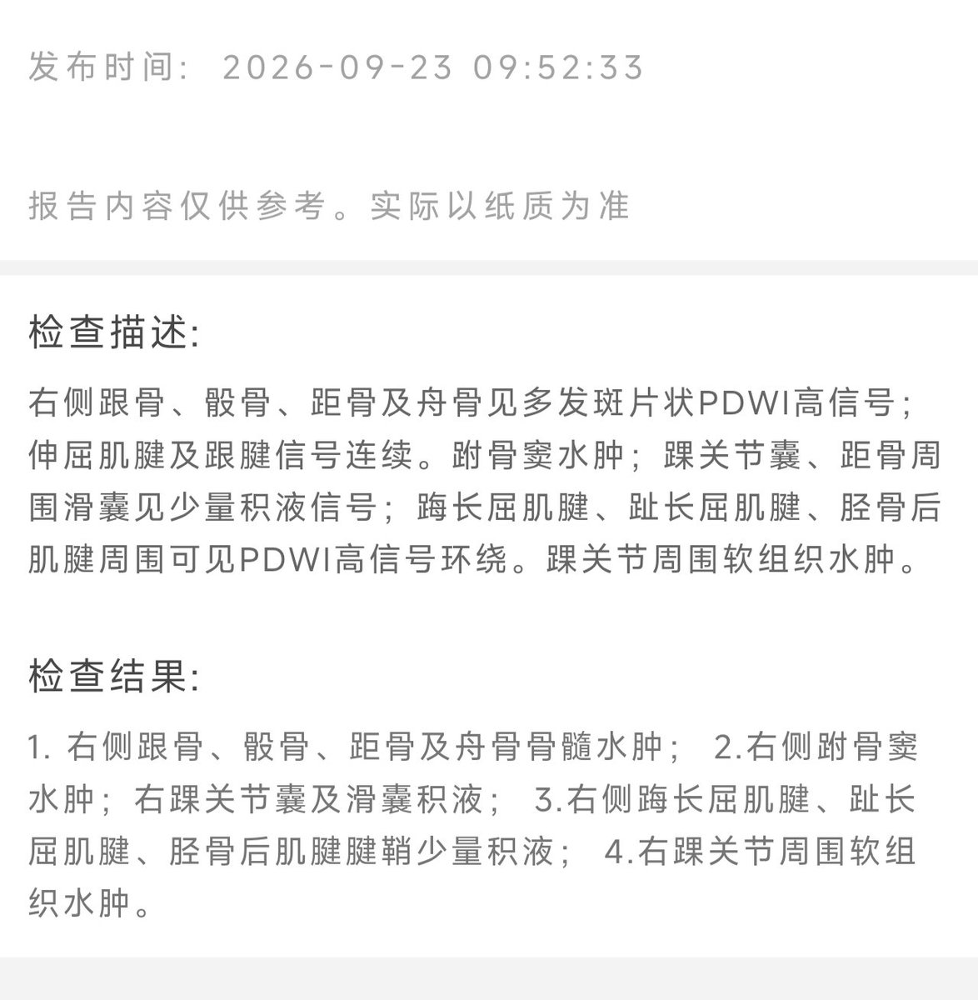
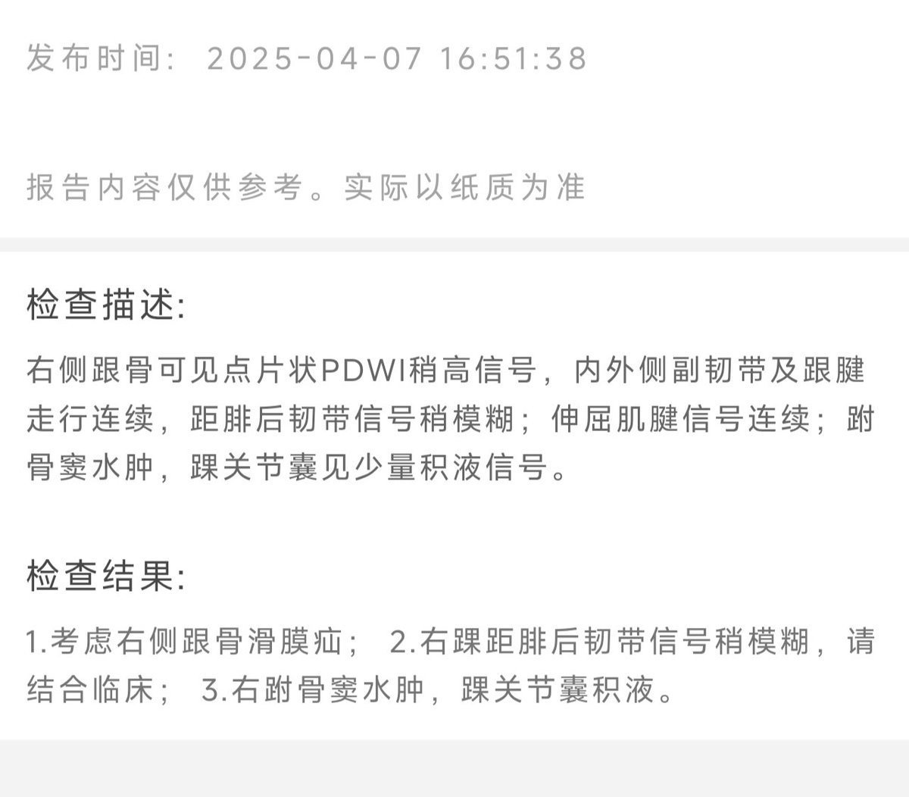
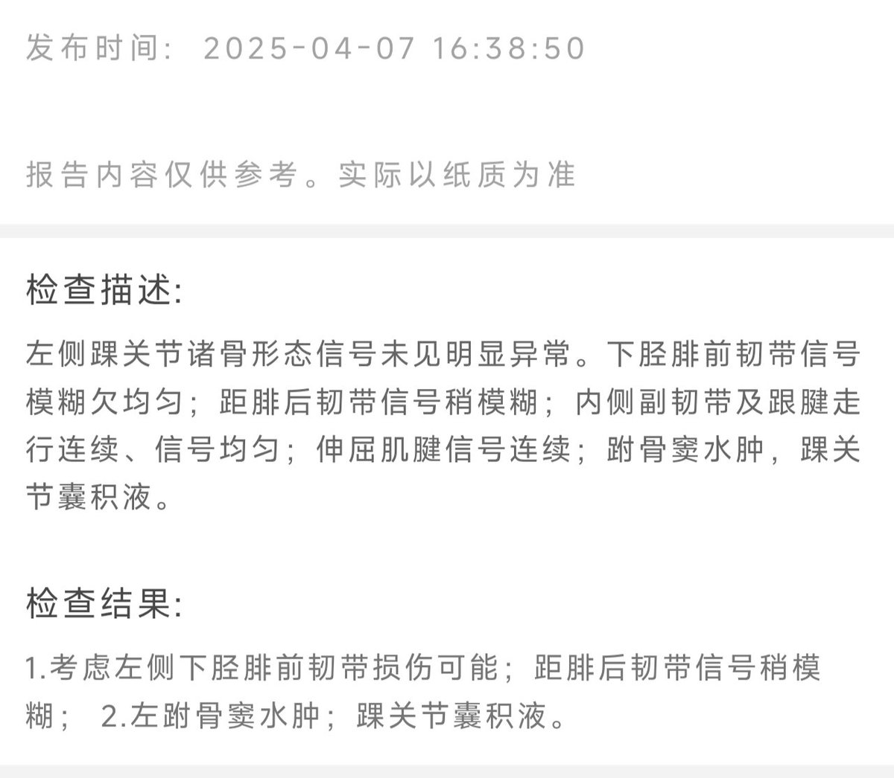
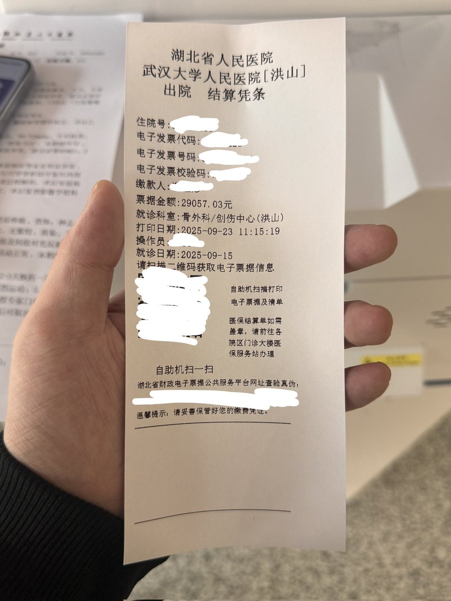

一周前又把右脚踝崴了，做完Mr以后也是韧带撕裂+跗骨窦、骨髓水肿，需要6周才能初步恢复行走能力，只是没有23年时的三级撕裂那么严重
再看这次崴脚前的更早的Mr报告，本身双脚踝就已经出现较重的慢性劳损了，可能ADHD加上慢性劳损关节本身就脆弱
医生怀疑我平时是不是运动量太大，负重太多了
可能好几年前负重和运动量确实比较多，但是感觉近两年似乎没有那么夸张，应该更多是旧伤加上没有好好减少运动量保养

再看这次崴脚前的更早的Mr报告，本身双脚踝就已经出现较重的慢性劳损了，可能ADHD加上慢性劳损关节本身就脆弱
医生怀疑我平时是不是运动量太大，负重太多了
可能好几年前负重和运动量确实比较多，但是感觉近两年似乎没有那么夸张，应该更多是旧伤加上没有好好减少运动量保养




2023年3月9日我摔伤左脚踝，韧带撕裂，数个月失去走路能力，因为行动能力瘫痪，危机干预工作停摆，arts数天后就出事，未能阻止数个朋友自杀去世
如今，我左脚踝只有摔伤前的50％的运动能力
此次摔伤，右侧尺骨鹰嘴骨折，右胳膊难以使用，医生说恢复至少一年，且活动范围和力量将终生受限和减弱
悲哀 https://t.co/xnd41VzGSX https://t.co/mGdqydupXQ
如今，我左脚踝只有摔伤前的50％的运动能力
此次摔伤，右侧尺骨鹰嘴骨折，右胳膊难以使用，医生说恢复至少一年，且活动范围和力量将终生受限和减弱
悲哀 https://t.co/xnd41VzGSX https://t.co/mGdqydupXQ